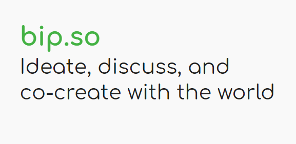

From April 2021 - this day.
as a React front end developer

What is bip?
It can be summarised as document + social layer + git like version control.
How i helped build bip?
From the front end point of view bip has a relatively complex front end app
and the components i think worth checking is as follows,
- Version contol
- Branching and drafting.
- Merging.
-
The permssion system. (so far the most complex part of bip front end)
Tech i used
- HTML
- CSS > SASS
- Javascript > React
- Virtualisation
- GraphQl
- Git
- Gitlab